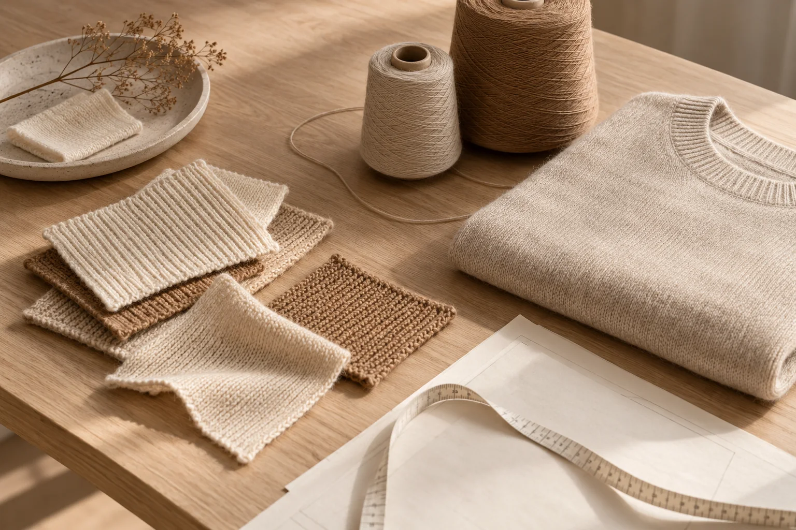

From first contact
to finished knitwear.
A clear path from design and sampling to production and delivery.

Design & development
01 / DEVELOPMENTContact us
Share your requirements or questions.
Confirm design
Discuss styles, references and design direction. Initial Quotation.
Confirm details
Agree on yarn, gauge, measurements and specifications.
Sample production
Develop samples to the agreed design and specifications.
Approval & production
02 / APPROVAL & PRODUCTIONSample delivery
Send samples for your review.
Sample approval
Review fit, feel and details; discuss any adjustments. Confirm final price.
Production deposit
Arrange the production deposit as agreed.
Bulk production
Produce to the approved sample and order requirements.
Inspection & delivery
03 / DELIVERYQC inspection
Inspect garment quality and conformity to the order.
Product packaging
Pack garments to the agreed requirements.
Balance payment
Arrange the balance payment as agreed.
Bulk delivery
Dispatch the order using the agreed delivery method.
Design and details may be refined before sample approval. Payment and delivery arrangements are agreed for each order.